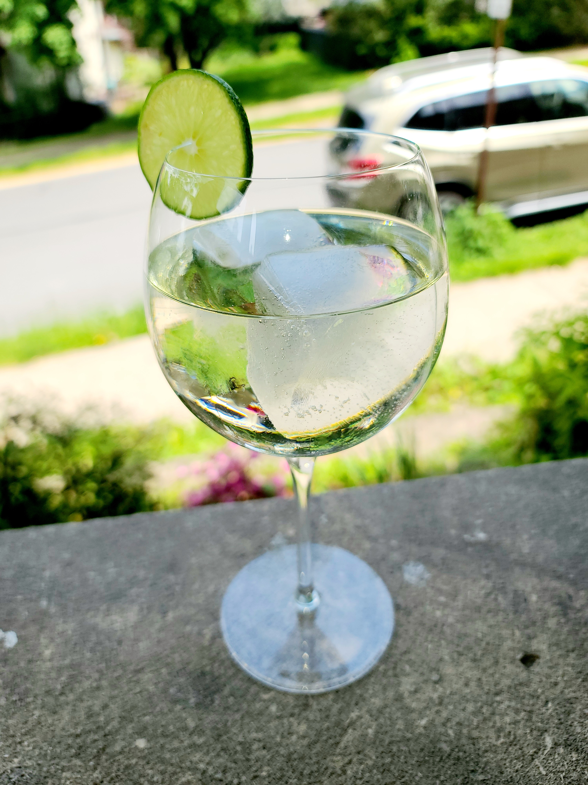

White Wine Spritz
By Sam Workman in wine low abv glass
May 17, 2022

In the Glass
| Quantity | Measure | Ingredient | Notes |
|---|---|---|---|
| 4 | oz | White Wine | Sauvignon Blanc or Pinot Grigio |
| 6 | oz | Club Soda | |
| 4 | dashes | Orange Bitters | “Feegans” or half and half Fee Bros. and Regans. |
| 1 | Wheel | Lime | Garnish |
Method
Build in the glass. Bitters, white wine, then club soda. Let the club soda do the mixing for you. Garnish with the lime wheel.
I prefer this one in a wine glass. A couple of large ice cubes round out the low alcohol mix and add brisk refreshment. You’re not looking for a ton of alchohol - and you and a friend could sip away at a bottle of wine all evening this way.
- Posted on:
- May 17, 2022
- Length:
- 1 minute read, 112 words
- See Also: